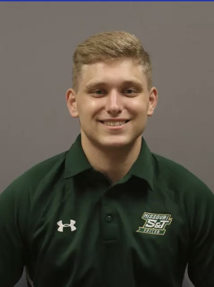
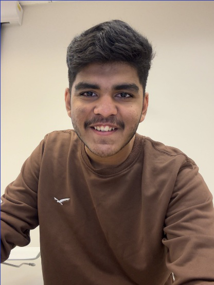
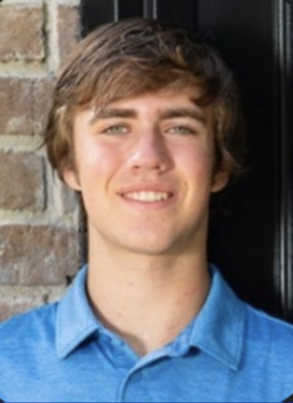
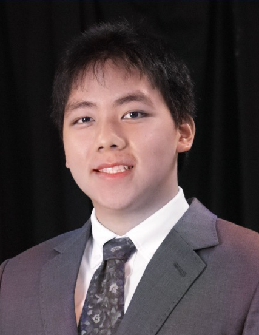

Emre Guvenilir ‘25

Harsh Desai ‘27

Jack Bray ‘27

Julian Tseng ‘27
We are a team of four students from Davidson College, whose mission is to empower fitness enthusiasts and
athletes by providing an intelligent, computer vision-powered platform that delivers precise and actionable
feedback on workout performance. VisionFit analyzes video input to assess barbell speed, velocity, form,
fatigue, and injury risk, with a dedicated focus on the three fundamental lifts: squat, bench, and deadlift.
Beyond movement analysis, VisionFit offers personalized diet recommendations, ensuring a comprehensive approach
to performance optimization and injury prevention. Additionally, we aim to enhance trainer-athlete collaboration
by enabling trainers to review and refine their athletes' performances, fostering continuous improvement and
excellence.